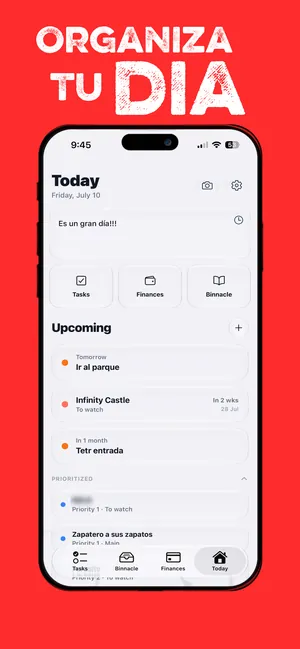
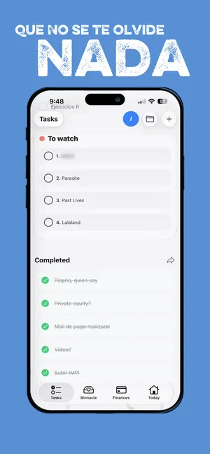
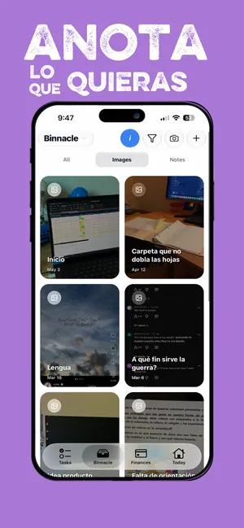
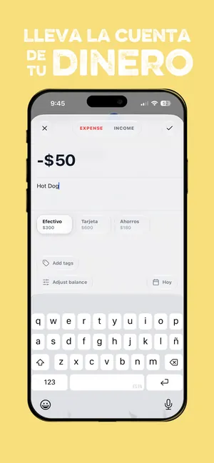

Hago cosas. Algunas funcionan.
Soy Joaquín Álvarez Mercado, de México. Tengo experiencia en diseño y desarrollo de plataformas.


Cofundador
Acuña Sin Huella
Un movimiento ambiental que cofundé en Ciudad Acuña.


- Más de 50 voluntarios y más de 44 bolsas de basura en dos jornadas de limpieza.
- Cambiamos 1,300 botellas de plástico por 13 árboles plantados en el campus, con el Departamento de Ecología del municipio.
- Pláticas sobre el cuidado del agua en 3 secundarias, junto con el Museo del Agua.
En curso
Hablemos de Negocios
Videos de un minuto que explican cómo funciona un negocio real. Ahora los grabo desde India.
- Trisol
- KidZania
- Kavak
- Clip
- theory11
Hablemos de negocios.
Cada episodio empieza igual.
- Los 5 videos suman 1.4 millones de vistas entre TikTok e Instagram.
- Uno solo pasó las 500 mil. En el Creator Lab lo dejaron de tarea: hacer un video con mi estilo.
Todos siguen la misma fórmula de 7 bloques
- Hook de dato
- ¿Pero cómo funcionó?
- Fundador con fricción
- Funcionó porque…
- Insight
- Resumen circular
- Cierre
El video de 500 mil vistas Instagram TikTok YouTube Media kit
Diseño web
Páginas web
Diseño y hago páginas que se entienden en segundos, sobre todo en el teléfono.


- Mi enfoque: primero el diseño y la experiencia de usuario.
- Todas funcionan igual de bien en el teléfono que en la computadora.
- También he diseñado la experiencia de usuario de .
En pausa
Proyectos que hice y dejé en pausa. Ábrelos para ver más.
 FOLIOUna carpeta que se abre plana. Prototipo 1, 2026.
FOLIOUna carpeta que se abre plana. Prototipo 1, 2026.
- 1Hecha a mano
- 2Se abre plana

- 3Argollas aparte

- 4Gira 360°

- Empezó como una nota en mi app:
Carpeta que no dobla las hojas.
- Prototipo 1, hecho a mano en Ciudad Acuña.
- Solicitud de modelo de utilidad en trámite ante el IMPI.
ParatuMi app para organizar el día. En la App Store desde 2025.




Paratu
Corte de caja
- Precio
- $0.00
- Ingresos
- $0.00
- Anuncios
- $0.00
- Cuentas
- 0
- Rastreadores
- 0
- Datos en la nube
- 0 KB
- Desarrolladores
- 1
Usuario más fielyo
¡Gracias por su visita!
- La diseñé, la programé y la subí a la App Store yo solo.
- Con ella aprendí mucho de diseño y experiencia de usuario. Ese es mi enfoque en todo lo que hago.
- Sin cuenta, sin anuncios y sin nube: tus datos se quedan en tu teléfono.
- Tres nombres en un año:
FJTZ,FLINT, Paratu. - No hizo dinero. Es la app que uso yo.
Ahora
- En India, estudiando en TETR.
- Grabando negocios que me encuentro en la calle.
- Diseñando páginas web.
-

Mi generación de TETR
-

Visitando Pee Safe
-

Nueva Delhi, de noche
-

Yo, en Gurugram
Disponible para proyectos
Hablemos.
Si algo de aquí te dio curiosidad o necesitas una página, escríbeme. Contesto yo.
Estoy en India.